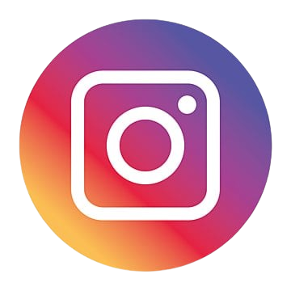
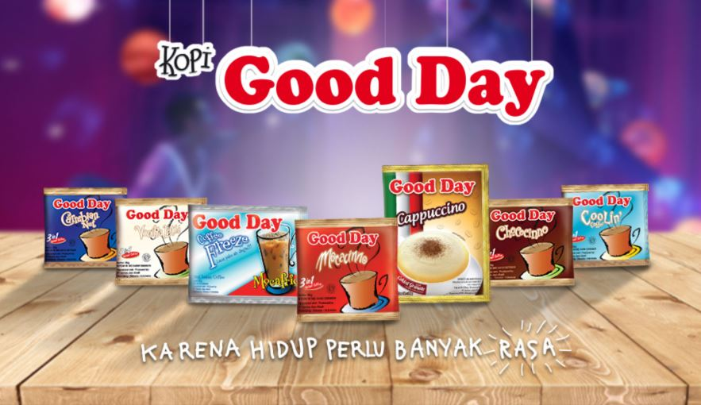

Social Media :
-  : @gooddayid
- : @GoodDayID
- : Good Day ID

Go Soe Loet, seorang perantau dari Fujian, Tiongkok, tiba di Indonesia pada tahun 1920 dan mendirikan kedai kopi "Hap Hoo Tjan" (Kapal Api) bersama saudara-saudaranya di Surabaya pada tahun 1927. Usaha kopi mereka berkembang pesat hingga akhirnya bisnis tersebut dibagi antara Loet dan saudara-saudaranya pada tahun 1962.
Anak Loet, Go Tek Wie (Soedomo Mergonoto), serius mengembangkan bisnis ini dengan modernisasi dan strategi pemasaran inovatif, seperti iklan di televisi. Pada 18 Mei 1979, PT Santos Jaya Abadi didirikan sebagai perusahaan kopi keluarga. Di bawah kepemimpinan Soedomo, Kapal Api berkembang ke pasar nasional dan internasional, serta memperluas bisnis ke kedai kopi Excelso, Kopi Goodday dan bidang lainnya seperti permen dan minuman ringan.
Rasakan sensasi menikmati kopi dengan cara apapun! Boleh di seduh dengan menikmati hangatnya kopi, maupun diberi es agar merasakan kesegarannya! Terdapat banyak produk dan varian rasa yang dikeluarkan oleh Good Day, Silakan coba semua ya agar tidak bosan!
Good Day Coffee adalah merek kopi instan terkemuka di Indonesia yang menawarkan berbagai rasa, seperti cappuccino, mochaccino, tiramisu, dan karamel macchiato. Produk ini mudah ditemukan di toko-toko di seluruh Indonesia, menyediakan kopi berkualitas dengan harga terjangkau. Dengan inovasi berkelanjutan, Good Day Coffee menjadi pilihan favorit bagi pencinta kopi di seluruh negeri.
ABOUT US
CONTACT